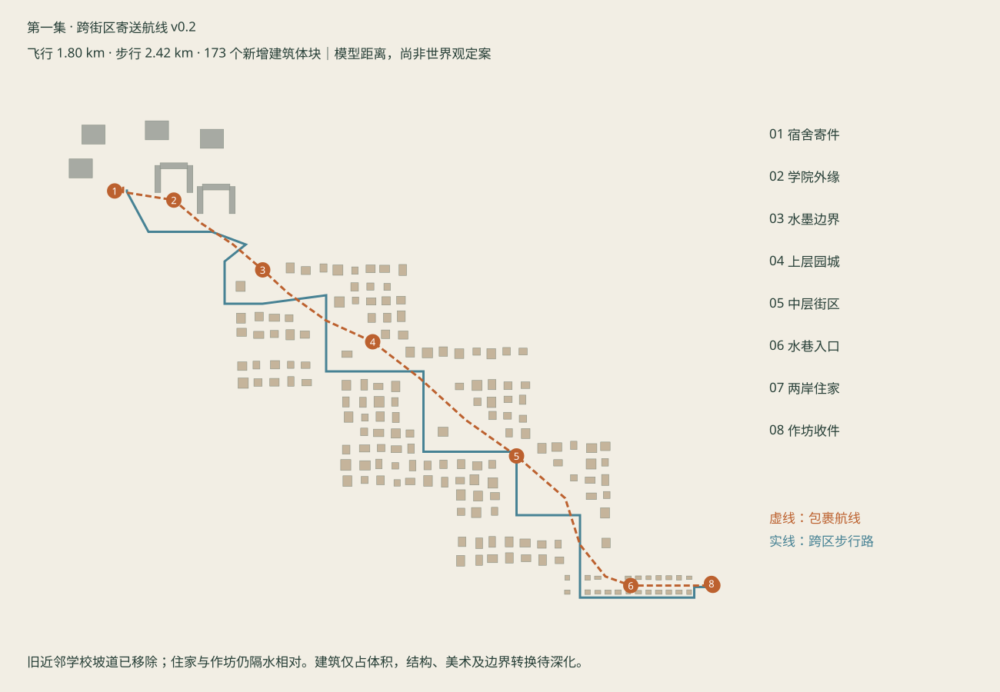

FUTURE GIRL · EPISODE 01 / v0.2
跨过街区，才抵达家与作坊
航线 1.80 km步行 2.42 km173 个建筑体块
根据作者修正拉开学校与住家距离。旧近邻坡道退出当前布局；保留住家与作坊隔水相对。学校与城区之间已有学习庭院、叠水与薄雾、上中下三片园城及长水巷。新增建筑是粗体块，距离和地形仍为拍摄工作假设。

总览中的橙线是路线标记，仅总览渲染显示；实际场景没有实体发光航道。大底板用于尺度示意，不确定世界观中的固定地面。
实际坐标路线图

按旅程顺序看空间
整条寄送航线总览
C-G01—C-G06 · 43 mm

学校与相邻学习庭院
C-G02/G03 · 35 mm

沿学院外缘离开
C-G03 · 30 mm

叠水与薄雾边界
C-G04 · 36 mm

雾后上层园城
C-G04 · 32 mm

穿过中段街区
C-G04 · 32 mm

层叠街区向水巷下降
C-G04/G05 · 32 mm

长水巷与住宅体块
C-G05 · 35 mm

抵达住家与对岸作坊
C-G05/G06 · 32 mm
当前验证边界
包裹路径3642个采样位置、跨区步行9755个采样位置，均无本次射线检测发现的障碍或地面缺口；寄收端点约2毫米台面间隙。离散检查不等于完整碰撞或角色动作验收。没有把1.8公里压成旧版10秒路径动画；正式飞行节奏、运镜、角色及建筑细化留待后续。